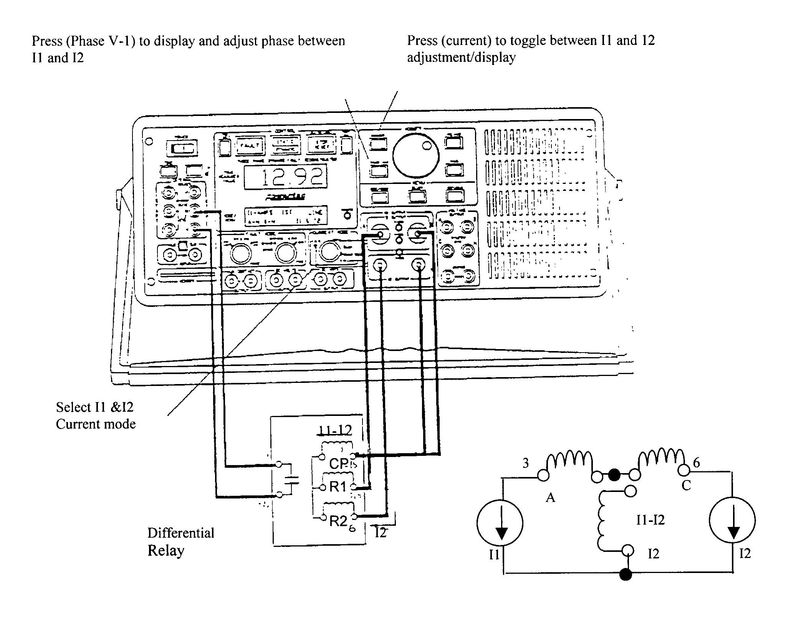
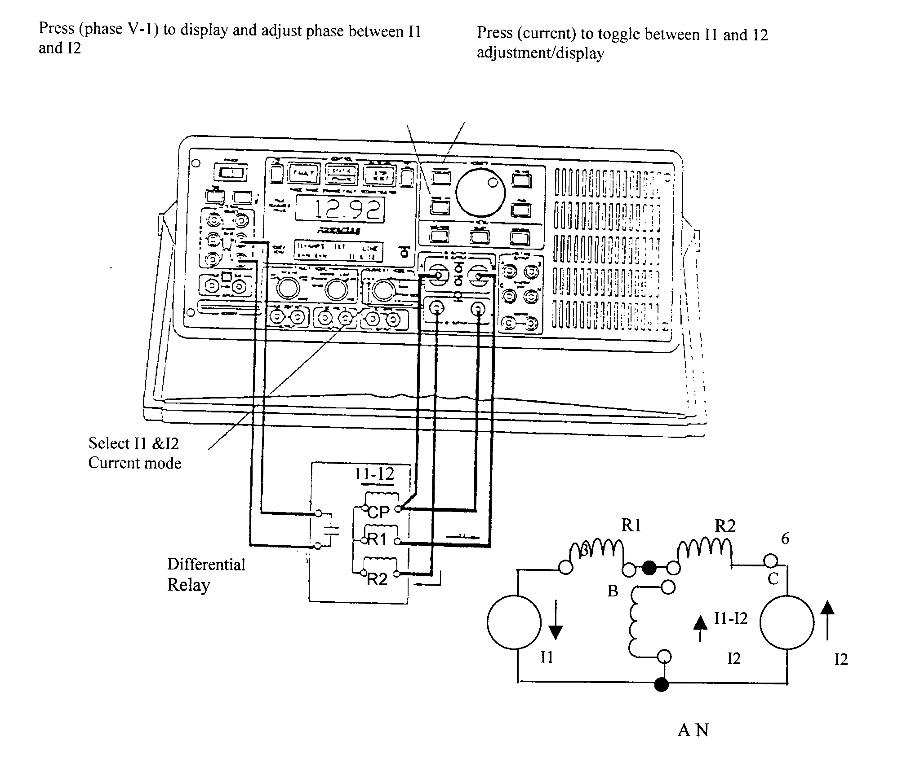
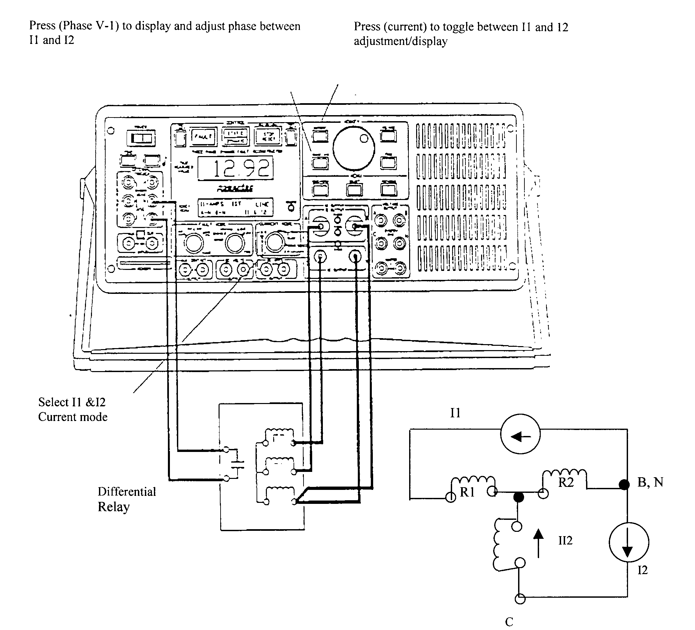
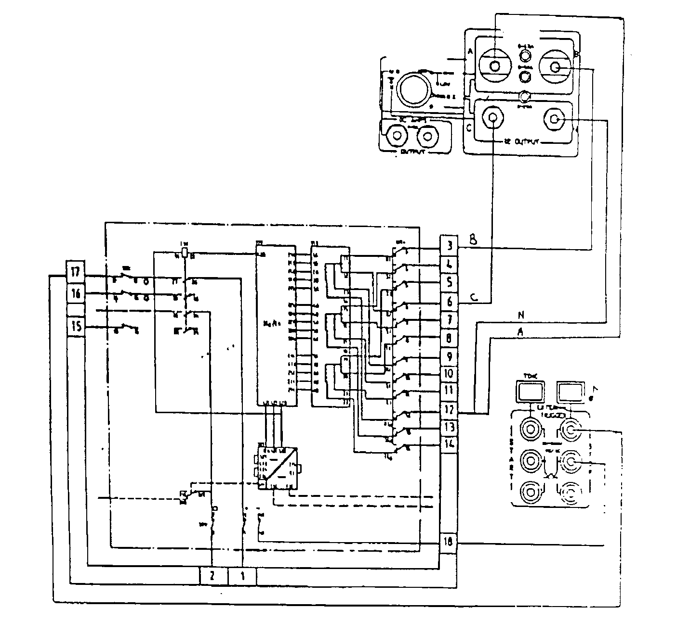
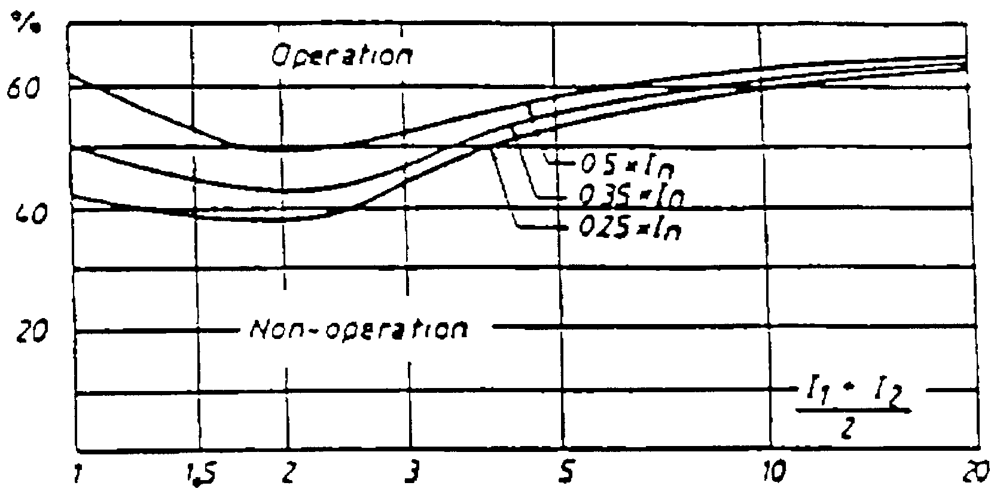
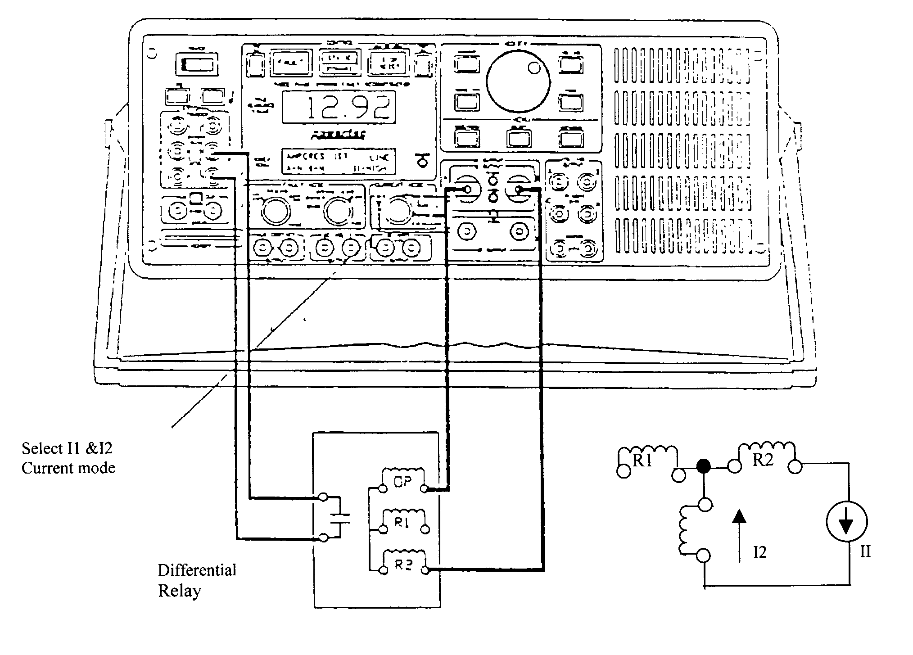
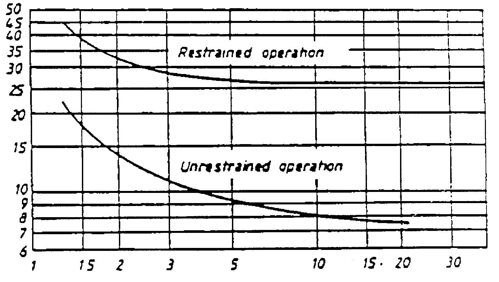

|
 |
|
Protection |
Technical
Procedure | |
|
Equipment:
Transformer Protection
Differential Relay
RADSB
ABB |
Document No: DfR-001-r0 |
|
Issued to:
Networks |
|
Status:
APPROVED |
|
Procedure:
Using
MTS 1700 “Manta Test Set” |
Approved Date:
06 Sep 1999 |
|
MDate to be
Reviewed: Sep 2004 |
Introduction
This procedure detail the steps required to completely check the
proper operation and calibration of the RADSB differential relay. It is
recommended this procedure be carried out on a yearly base. This work be carried
out section of this document is divided into 3 sections.
The first preliminary steps to prepare for relay testing
describes the activities required prior to testing. Some of these steps could be
performed days before the actual test the second section preparation for testing
describes the steps to set up the equipment for performing the actual tests. The
third section is the actual test.
The document is formatted the way to minimize the possibility of
error causing personal injury or damage to equipment.
Safety Precautions
A work permit must be issued and the qualified maintanance staff should carry the
suitable safety category
Safety fence with caution marks surrounding the work area is required
Wear your safety and healthy equipment as safety helmet, safety shoes, ... etc
Outage arrangement and work permit must be issued.
Check from the station drawing that the test plug will isolate: breaker trip
coils, breaker failure scheme, fault recorder, and event recorder and
disturbance alarm associated with this relay.
If the test plug does not isolate one of the pervious steps you have to
isolate it.
Tools and Equipment
- Test plug handle type RTXH 18.
- Clamp ammeter or plug RTXM and Ammeter.
- Power tec DFR or MTS-1700 test set.
- Test leads
Work to be Carried Out
Steps to Prepare for Relay Testing
-
Review technical reference material manufacture's manual.
-
Obtain outage for transformer protected by this relay.
-
Check that the disconnect switches from all transformer
sides are opened and tagged.
-
Inspect the secondary circuits of CT, and all cabling
supplying the relay.
Testing the Relay and the Relay Outputs
-
Min Pickup test: carefully follow this test procedure
-
Slope test : carefully follow this test procedure steps
-
Instantaneous test: carefully follow this test procedure
-
Harmonic restraint test: carefully follow this test
procedure
-
Tripping time test carefully follow this test procedure
-
Manual tripping test carefully follow this test procedure
-
Verify the test result match the relay setting if not
consult the technical services.
Preparations
-
This procedure is used to perform off load test.
-
Look at the E.E.A panel nameplate and check that EEA system
designation nameplate agrees with the transformer that has been taken out of
service.
-
Using a clip-on ammeter check there is no current flowing in
the terminal # 3, 4, 5, 6, 7 and 8 on the rear side of the test switcher
-
Using RTXM and ammeter check there is no current flowing in
terminal # 3, 4, 5, 6, 7 and 8 by inserting the RTXM plug in the front side
of the test switch.
-
Review the RADSB data.
-
Do a visual inspection to familiarize your self with the
relay insure there is no physical damage.
-
Test connection should be made according to fig (1) and the
table (1) below, which is for RADS-B relay having two through fault restrain
input circuits.
The connection can be made also according to fig (1-b) but you
have to change the connection according to the phase under test and the two
currents will have zero phase angle difference. This is the only way of
testing differential relays using the older test sets
|
Test of |
Phase |
Connect
Wire
B&N
to
Terminal |
Connect
Wire A to
Terminal |
Connect
Wire C to
Terminal |
Connect
Mode |
Note |
|
Operate Value
|
R
S
T |
12
13
14 |
3
4
5 |
6
7
8 |
11&12 |
Inject 11
only or 12 |
|
2nd Harmonic Restraint
|
R
S
T |
12
13
14 |
3
4
5 |
6
7
8 |
12-
HARMONIC |
|
|
Through
Fault Restraint
|
R
S
T |
12
13
14 |
3
4
5 |
6
7
8 |
11&12 |
180oо
between |
|
Unrestraint
Operating current Isu
|
R
S
T |
12
13
14 |
3
4
5 |
6
7
8 |
11&12 or
11-HIGH |
Inject 11
Only or 12 |
Table (1)
Note: you can keep the phase angle between 11&12 to 0o
by reverse the connection of 11 or 12 see figure (1-b) i.e.:
- Connect terminal A&N to terminal 12 (R) or 13 (S) or 14 (T)
- Connect terminal B to terminal 3 (R) or 4 (S) or 5 (T)
- Connect terminal C to terminal 6 (R) or 7 (S) or 8 (T)

Fig (1a) Connection For 3- Terminal Current Differential Relay
for Testing R Phase

Fig (1b) Connection For 3- Terminal Current Differential Relay
for Testing r Phase (i1 & u2 l 0)

Fig. (Ic) Connection for 3- terminal current differential
relay using older test set (i1 & u2 l 0)
Min Pickup Test (Checking the Restrained Operating Current 1SR)
-
Insert the test plug RTZH 18.
-
Connect the RADSB relay as shown in fig (2) and table (1)
Select 11&12 current mode and static operation mode turn (PREFAULT) off.
-
Check with the relay set to (0.25 or 35 or 0.50) times
nominal current.
-
Press (CURRENT0 to display/ adjusts the I1 current. "I1
-AMPS" should be indicated in the (MODE/ MENU DISPLAY) press and hold
(FAULT) and SLOWLY increase the current until the relay operates (the
injected current is into half of the restrain coil and the operate coil).
-
Decrease the operate current ( 11) to Zero.
-
Press (CURRENT) again to display adjusts the 12 current.
"12-AMPS" should be indicated in the (MODEMENU DISPLAY). PRESS AND
HOLD (fault) and SLOWLY increase the current until the relay operates. (the
injection is to the second half of the restrain coil and the operate coil.
-
Relay operation can be checked by observing the indicating
stop lamp of the tester connected between RTZP 18 test plug terminals 17 and
18 and the light emitting diode 1> on the RXSGAI should light.
-
the correct phase indication for the relay can be checked by
Observing unit RXSGAI in SEAT 331
-
Record the restraint operating current Isr in the following
table:
-
The relay will operate at current equal to the set current
± 10%
|
Setting x I rated |
Phase |
Operating value |
Remarks |
|
0.25
0.25
0.25 |
R
S
T |
|
|
|
0.35
0.35
0.35 |
R
S
T |
|
|
|
0.50
0.50
0.50 |
R
S
T |
|
|

Note: Inject one current through both the operating coil
and half the restraint coil
Test 1: I1 = 0, Inject 12, (This is to check the first half of the
restraint coil)
Test 2: I1 = 0, Inject I1 (This is to check the second half of the restraint
coil)
Figure (2) RADSS-B Connection for Minimum Pickup Test for R
phase
Scope Test (Checking the
Through-Fault Restrain Characteristics)
-
Connect RADSB relay as shown in fig (2) Select I1& 12
current mode and static operation mode. Turn (PREFAULT) off.
-
Press (CURRENT) to display/ adjusts I1 current.
"I1-AMPS" should be indicated in the (MODE / MENU DISPLAY). Press
and hold (FAULT) and increase current to IA The relay will trip.
-
Press (current) again to display / adjust 12 current.
Increase the 12 current to 1A press (PHASE V-1) and adjust the phase between
11&12 to 180o the relay will block (the differential current
=0)
-
Slowly increase the current I1 or 12 until the relay
operates. Record I1 and 12 reading release the (FAULT) button.
-
Relay operation can be checked by observing the indicating
stop lamp of the tester connected between RTXP 18 test plug terminals 17 and
18 and the light emitting diode 1> on the RXSGAI should light.
-
Observing unit RXSGAI in SEAT 331 can check the correct
phase indication for the relay.
-
Use the following formula to calculate slope: (I1 - I2) /
(I1 - I2)/2
-
This can be directly displayed by selecting the DISP RATIO(
I1 - I2)/( I1+ I2)x2via the menu.
-
Change the connection according to table 1 for phase S&T
and repeat the steps 2 to 6
-
Repeat steps from 2 to 7 with current I1 2 A, 3A… 10 A.
-
Record the results in the following table.
-
To measure the tripping time select dynamic operation press
(FAULT) to perform ttiming test.
-
When the relay operates, the (STOP / REST) button will
illuminate. Press (TIME) to see the operation time press (TIME) again to
toggle between display in second or cycles.
-
Press (STOP/RESET) to clear and prepare for next test.
-
Compare this time with the relay technical data at the
Appendix II
|
Phase |
I1 |
12 |
(I1 + 12)/2
in x In |
Slope value From fig (3) |
Slope reading from the tester |
Remarks |
|
R |
1A
2A
3A
4A
5A |
|
|
|
|
|
|
S |
1A
2A
3A
4A
5A |
|
|
|
|
|
|
T |
1A
2A
3A
4A
5A |
|
|
|
|
|
(Id / I1 - I2)/2

2
Restraint through current in multiples at rated current In
Figure (3) Restraining Limit Values at External Faults
Instantaneous test (checking the
unrestraint operating current isu):
Caution: The relay is rated for 10 Amps continuously for IA
version and 20 A for 5A Version.
DO NOT apply Current greater than 10 Amps for more than one
Second (for IA version 100a during I s and 250 A during I s See technical
data)
-
Connected RADSB relay as shown in fig (2) if 22A or less is
required, and 11 & 12 current mode used.
-
If more than 22A is required, connect as shown in fig (4).
-
Connect terminal 3 or 6 to Terminal A of the test set and
terminal 12 to Terminal B of the test set when testing R phase.
-
Connect terminal 4 or 7 to Terminal A of the test set and
terminal 13 to Terminal B of the test set when testing S Phase.
-
Connect terminal 5 or 8 to Terminal A of the test set and
terminal 14 to Terminal B of the test when testing T phase.
-
For this case, select I1
HIGH CURRENT MODE Select static
operation mode Turn (PREFAULT) off.
-
Press (CURRENT) to display/adjusts the I1 current.
"I1-AMPS" should be indicated in the (MODE / MENU DISPLAY). Press
and hold (CURRENT) and increase the current until the relay high setting
values Isu=8 or 13or 20xIn that the unrestrained operation is obtained.
-
Press and hold (FAULT) and SLOWLY increase the current until
the relay operates.
-
Relay operation can be checked by observing the indicating
stop lamp of the tester connected between RTXP 18 test plug terminals 17 and
18 and the light emitting diode I> > on the RXSGAI should lights.
-
Record the Unrestraint operating current Isu in the
following table:
|
Setting x I rated |
phase |
Operating Value Isu |
Remarks |
|
8
8
8 |
R
S
T |
|
|
|
13
13
13 |
R
S
T |
|
|
|
20
20
20 |
R
S
T |
|
|

Figure (4) RADS-B Connection for Instantaneous Test When More
than 22a Is Required
Harmonic Restraint Test:
-
Connected RADB relay as shown in fig (2). Select 12-HARMONIC
current mode and static operation mode Turn (PREFAULT) on.
-
Press (CURRENT) to display / adjust 12 current
"12-AMP" should be indicated in the (MODE / MENU DISPLY). Increase
the current to the desired test value until the relay operates.
-
Press (CURRENT) to display / adjust % harmonic %
"HARM" should be indicated in the (MODE/MENU DISPLAY) Increase the
% harmonic until the relay restrains to determine the % harmonic restraint
to value.
-
The harmonic value default to second harmonic. For testing
at higher harmonic, press (FREQ) and turn the (MODIFY) knob to select the
desired value.
-
Adjust for 5 "harmonic and perform steps 2-3.
-
Record the test results.
-
Turn (PREFAULT) off.
-
Compare the results with the % harmonic value from the relay
technical data
2nd harmonic = 17 % of the fundamental
5th harmonic = 38 % of the fundamental
|
12 amp |
1 |
2 |
3 |
4 |
5 |
6 |
7 |
8 |
|
2 nd
harmonic % |
|
|
|
|
|
|
|
|
|
5th
harmonic % |
|
|
|
|
|
|
|
|
Notes:
-
%2ndhormonic = (0.47Idc)/(Iac +1.11Idc) x 100 (Westinghouse
formula)
-
%2ndhormonic = (0212Idc)/ (0.47Idc +0.5Idc)x 100 (GE
formula)
Where,
Iac = 50 HZ component in Amps (RMS)
Ids = Half-wave rectified component in Amps (average)
Note that the GE formula is actually the same as the
Westinghouse formula if 2.22 multiply both numerator and denominator.
When 12-HARMONTIC current mode is selected, and a harmonic has
not been selected, the DFR-I will automatically select 2 nd -harmonic
when 12-harmonic mode is exited, the harmonic setting will return to the value
before 12-HARMONIC current mode was selected.
In 11& 12 current mode, the vc voltage source is
re-configured as a current source for I1 output. To ensure maximum I1 output,
turn all Va and Vb setting to zero In I1 &12 current mode, the I1 and 12
neutrals may be tied together, but the outputs cannot be paralleled (ie.
Do not tie the red terminals together) as a method to obtain
higher currents.
Tripping Time Test:
-
Connect RADSB relay as shown in fig (2) Select I1 & 12
current mode and static operation mode. Turn (PREFAULT) off.
-
Press (CURRENT) to display/I1 CURRENT. "I1-AMPS"
should be indicated in the (MODE/MENU DISPLAY). Press and hold (FAULT) and
increase current to IA the relay will trip.
-
Press (CURRENT) again to display/adjust 12 current. Increase
the 12 current to IA press (PHASE V-I) and adjust the phase between
11&12 TO 180º the relay will block (the differential current = 0). о
-
Slowly increase the current 11 or 12 until the relay
operates. Record 11 and 12 reading release the (FAULT) button.
-
Relay operation can be checked by observing the indicating
stop lamp of the tester connected between RTXP 18 test plug terminals 17 and
18 and the light emitting diode 1> on the RXSGAI should light. To
measure the tripping time select dynamic operation. Press (FAULT) to perform
the timing test.
-
When the relay operates, the (STOP/REST) button will
illuminate. Press (TIMF) to see the operation time press (TIME) again to
toggle between display in second or cycles
-
Press (STOP/RESET) to clear and prepare for next test.
-
Compare this time with the relay technical data.
The operate times with output tripping relays type RXMSI and
type RXME 18
|
Operate time |
RXMSI |
RXME 18 |
|
Id = 3 Isr |
Appr.30 ms |
Appr.60 ms |
|
Id = 10 Isr |
Appr.28 ms |
Appr.60 ms |
|
Id = 2 Isr |
10-20 ms |
Appr.40 ms |
Or you can also refer to figure (5) the operate time-current
characteristics
|
Phase |
I1 |
12 |
(I1 -12)
|
(11-12)/set
operating current |
Operating time |
Remarks compare the time with the time from fig (5) |
|
R |
|
|
|
|
|
|
|
S |
|
|
|
|
|
|
|
T |
|
|
|
|
|
|

Off current in multiples at set operating current
Figure (5) The Operate Time-Current
Characteristics
Manual Tripping Test:
-
Switch of test
equipment.
-
Withdraw the test plug
from the relay.
-
With the Isolator
Switches Open close the circuit breaker at both ends of the transformer
-
Open the small plastic
hole cover of the tripping relay RXMSI
-
Close the tripping
contacts manually with small screw drive
-
The two circuit
breaker should trip at both ends.
-
Put the small plastic
cover back on the hole
Return Relay to Service And Associated Equipment
-
Make sure that tester is switched off and the test withdrawn
from the relay from the previous test.
-
If any equipment associated with the relay has been isolated
without the test plug it should be return to service by the following
restoration steps.
Fault
recorder event recorder and disturbance alarm.
Breaker
failure scheme
Request Power Transformer Be Returned to Service
-
Take crossed reading of all AC current and voltage supplied
to the relay, and compare it with the load conditions that reading should
agrees the station meters reading.
(MW/MVAR/Power factor).
-
Place a copy of the test result in the field maintenance.